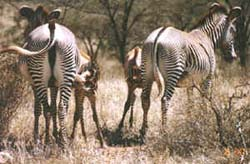
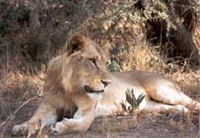

Our next Photo Safari to Kenya has now been scheduled, departing May 5th and returning May 23rd. Come join us and take some beautiful pictures like these two Grevy's zebras nursing their young at Samburu National Reserve. Our flight will leave from New York for London, where you will have dayrooms reserved before flying all night to Nairobi, Kenya. To provide the finest in personal attention, this tour will be limited to no more than sixteen persons. Game drives will take place early each morning and late each afternoon to provide maximum opportunity for game viewing when the animals are most active. We will visit five game reserves to allow for a variety of animal populations and scenery. This lion is relaxing in the late afternoon sun. Notice the scar under his right ear. He might have received that when he was booted out of his pride as a young lion. We will be spending most nights in tented camps listening to the night sounds of hunters like this magnificent animal. Enjoy visiting native villages and trading with the local businessmen. Birding enthusiasts will enjoy adding to their bird lists with Kenya's over 300 species of birds. View the beginning of the annual migration of millions of wildebeest, a spectacular sight. Each spring, the wildebeest travel from the Serengeti Plain to the Mara in search of water and grass. Our optional excursions include ballooning over the Masai Mara, fishing on Lake Victoria (the largest freshwater lake in the world), camel rides at Amboseli Serena Lodge, and golfing at the Aberdare Country Club All safari vehicles have roof hatches for unobstructed photography opportunities. Capture photos like this one of a reticulated giraffe. Window seats are guaranteed for all members of the group. Breakfast, lunch, and dinner will be provided each day. Professional guides will accompany the group at all times. Our English-speaking guides have years of experience conducting safaris. Our pool of guides includes ornithologist JoAnne Rife, zoologist Jenny Williams, anthropologist Christina Elizabeth, and naturalist Richard Newland. Private air transport will whisk us to our more distant game reserves. This is truly a trip of a lifetime. We expect the openings to fill quickly, so make your reservation now! The price schedule is as follows: Land Tour and Supplemental Group Air, $4,500.00; International Air, $1,350.00; and Single Supplement, $1,000.00. Entrance fees, hotel taxes, and services are included in the Land Tour price. A deposit of $500.00 is required at the time the booking is made. Trip Insurance and Luggage Insurance are optional and are also offered at extra charge. A passport and visa will be required for entry into Kenya. Call us at (555) 433-7844 for further information from 8:00 a.m. to 6:00 p.m. (Central Standard Time).
Animals that you may see on Safari



